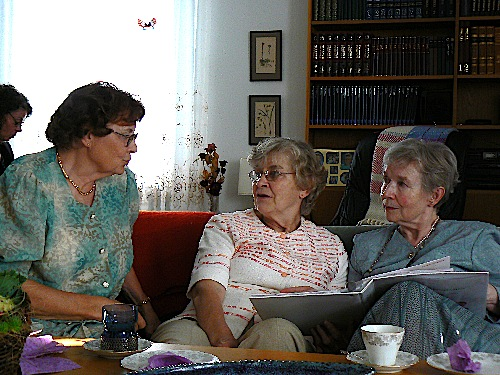

Kuvia syyskuulta 2007
 |
| Bussi 24: Seurasaari - Fölisön |
| Alkusyksyn kaunista säätä |
| Mummi kullitettuna |
|  |
| Kuvapäiväkirjojen tutkimista |
| Onkohan tässä jotakin yhdennäköisyyttä? |
| Laittakaa sekaan ja kastakaa! |
| Rautakita |
| Syksyn värejä Vihdintiellä |
 |
| Luukin kakkonen |
 |
| Jotenkin tuntui, että syksyn väriloisto ei ollut aikasempien vuosien tasolla, |
| vaikka kirkkaita värejä paikoitellen näkyikin. |
 |